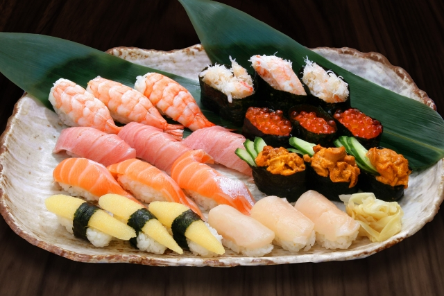

รายละเอียดของซูชิ (Sushi)
ซูชิเป็นอาหารญี่ปุ่นที่ทำจากข้าวหุงด้วยน้ำส้มสายชู, น้ำตาล และเกลือ และมักเสิร์ฟพร้อมกับปลา, ผัก, หรือวัตถุดิบอื่นๆ อาจเป็นรูปแบบต่างๆ เช่น นิกิริ, มากิ หรือซาชิมิ.
ประวัติ: ซูชิมีต้นกำเนิดจากประเทศญี่ปุ่นในสมัยโบราณ และเริ่มเป็นที่นิยมในรูปแบบปัจจุบันเมื่อประมาณศตวรรษที่ 19.
การเตรียม: ข้าวซูชิจะต้องผสมกับน้ำส้มสายชู, น้ำตาล และเกลือ หลังจากนั้นจะนำไปวางบนสาหร่ายห่อหรือใช้เป็นฐานในการทำซูชิชนิดต่างๆ.